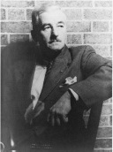

William Faulkner (1897-1962), Amerika’nın güneyinin en büyük edebî sesi olarak değerlendirilir. Romanlarında ve kısa hikâyelerinde, Güney’in unutulmaz büyük olayları –İç Savaş, Yeniden Yapılanma ve eski soyluluk sisteminin çöküşü– ile yüzleşirken yeni bir biçimsel zemin de yaratmıştır.

Faulkner, eserlerinin çoğunun mekânı olan Mississippi’de doğdu ve büyüdü. Ailesi, seçkin ve nesillerdir devlette kökleri olan, iyi bilinen bir aileydi. Büyük dedesi İç Savaş’ta bir Müttefik albayıydı ve hakkında yerel bir efsane de oluşmuştu. Faulkner gençliğinde Kanada Kraliyet Hava Kuvvetleri’nde ve dedesinin bankasında memurluk gibi farklı işler arasında gidip geldi. Tüm bu zaman boyunca şair olarak şöhret kazanmaya çalıştı.
Faulkner’ın ilk büyük başarısı şiirlerinden biriyle değil, halen en iyi eseri olarak görülen Ses ve Öfke (1929) adlı romanıyla geldi. Bir zamanlar önemli ve saygın olan ama yavaş yavaş bu niteliğini yitiren Compson ailesinin işe yaramaz son nesil çocuklarıyla –intihara meyilli Quentin, önüne gelenle yatan Caddy, nefret uyandıran Jason ve zihinsel özürlü Benjy– dibe vuruşunu detaylarıyla sergiler. Faulkner roman boyunca bilinç akışı tekniğini kullanır ve kronolojik kurgunun yöntemlerini bir kenara bırakır.
Ses ve Öfke, Faulkner’ın eski Güney’in gerileyişini ve modern dünyada değerlerinin anlamını yitirişini keşfe çıktığı romanlarından biridir. Bu eserlerin çoğu, farklı kitaplarda ortaya çıkan aynı yer ve aile adlarıyla aynı ortamı –Mississippi’deki kurgusal Yoknapatawpha Kasabası– paylaşır. Faulkner’ın diğer Yoknapatawpha romanları arasında önde gelenler, bir ailenin vefat eden büyükannelerini gömmek üzere çıktığı yolculuğu anlatan Döşeğimde Ölürken (1930), ırk kökeni belirsiz olan bir adamın sıkıntısını anlatan Ağustos Işığı (1932) ve kendine ait güney hanedanını kurmayı saplantı haline getirmiş bir adamı tasvir eden Abşalom, Abşalom!’dur.
Faulkner’ın eserleri, tematik ve kurgusal güçlükleriyle ünlüdür. Absürd bir şekilde sıfatlarla dolup taşan uzun cümleleri, bilinç akışı öyküleyiciliği, zamanı kırıp bükmeleri ve çoklu (çoğu zaman güvenilmez) hikâye anlatıcıları, okuyucuların önünde dikenli bir yol gibi uzanır. Bu tekniklerin nihai sonucu, Güney’i herhangi bir yazardan daha derinlikle keşfe çıktığı eserler bütünüdür. Bu başarısından dolayı Faulkner, 1950 yılında edebiyat dalında Nobel Ödülü’ne layık görüldü. 1962 yılında Mississippi’ye bağlı Byhalia’da öldü.
EK BİLGİ:
1. Güneyli şivesi yüzünden Faulkner kelimeleri yayarak konuştuğu için, yaptığı Nobel Ödülü konuşması ertesi gün gazetelerde çıkana kadar dinleyicilerin çok azı tarafından anlaşılabildi. O zamandan beri, tarihteki en hoş Nobel Ödülü kabul konuşmalarından biri olduğu söylenir.